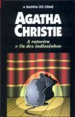

A Ratoeira e Os Dez Indiozinhos
The Mousetrap and Ten Little Indians
Ninguém melhor que a própria Agatha Christie para adaptar suas histórias para o teatro. Neste livro são apresentadas duas peças da autora. O argumento de A Ratoeira, que já foi encenada mais de 9 mil vezes em dez anos, é inspirada no conto “Os três ratos cegos”, no qual um assassino se diverte com os hóspedes de uma pensão isolada pela nevasca com uma cruel brincadeira de gato e rato. Já a peça Os Dez Indiozinhos é inspirada no famoso livro O Caso dos Dez Negrinhos. Convidadas por um homem misterioso, dez pessoas chegam para passar um fim de semana numa ilha remota e não demoram a descobrir que tudo não passa de um diabólico plano de vingança.